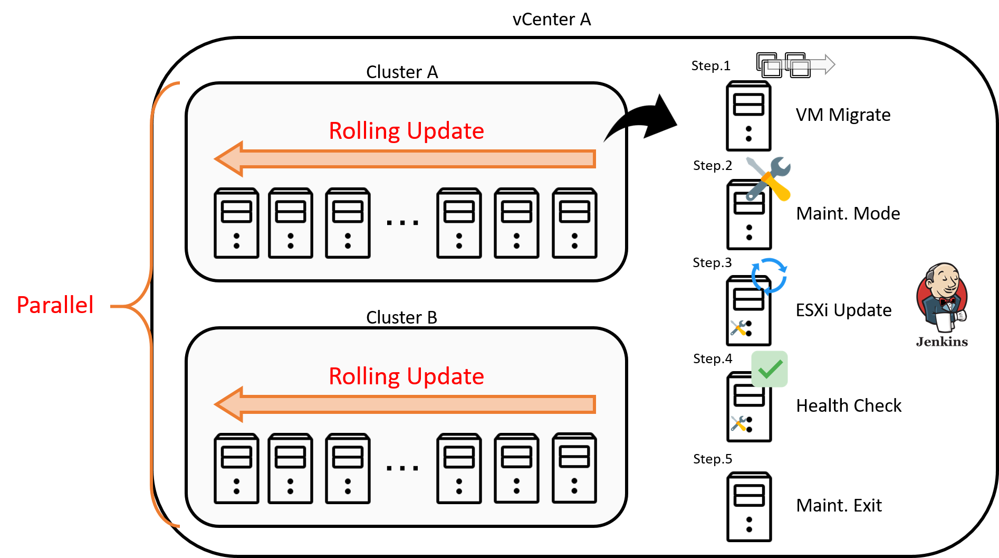
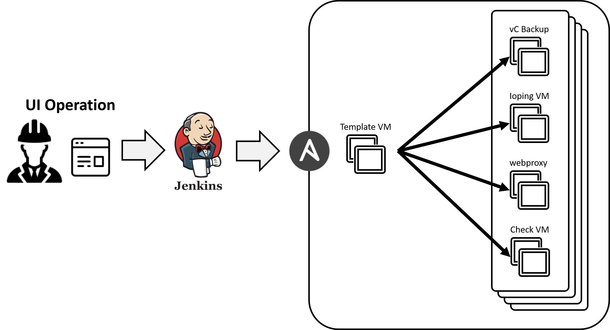
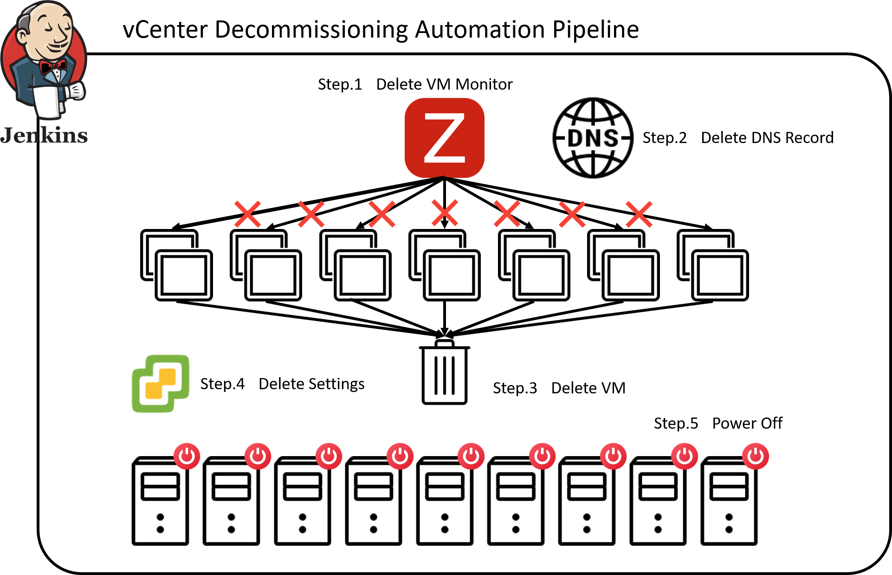

実績
Syslogの構築自動化により、ログ分析基盤の統一と保守性向上を実現
[ - ]
Syslogの構築自動化により、ログ分析基盤の統一と保守性向上を実現

ESXiサーバのログは日次でローテートされるため、障害発生時の詳細な原因追跡が困難という課題がありました。加えて、多数のSyslog
VMがサポート切れのOSで稼働しており、セキュリティ上のリスクも抱えていました。
この状況を解決するため、Ansibleを用いてSyslog
VMのデプロイ、OS設定、正常性確認に至るまでの一連のプロセスを自動化しました。この仕組みにより、数十台規模のVM群を迅速かつ一括で、常に最新の状態へ更新できる体制を構築しました。
結果として、全サーバのログを永続的に保管・分析する基盤が整い、障害対応の精度と速度が大幅に向上しました。同時に、OSのバージョンを常に最新に保つ運用が実現したことで、セキュリティリスクを抜本的に低減し、システムの保守性と安全性を飛躍的に高めることに成功しました。
数千台のESXiホストを一元管理するシステムを開発し、最適なリソース配置を自動化
[ - ]
数千台のESXiホストを一元管理するシステムを開発し、最適なリソース配置を自動化

数千台規模の仮想化環境において、ハードウェア障害時のリソース不足によるサービス停止が潜在的なリスクでした。また、リソース配分の最適化は一部の専門担当者の経験知に依存しており、作業の属人化と非効率性が課題でした。
この課題に対し、全ホストのCPU・メモリ使用率や統合率といった主要なKPIを常時監視し、リソースの逼迫リスクを予測するシステムを開発しました。さらに、リソースが不足した環境に対し、供給元の候補を自動で選定・推奨するアルゴリズムを実装。これにより、従来は高度な判断を要したリソースの最適配置を自動化しました。
本システムの導入により、インフラ全体の可用性が大きく向上。加えて、専門知識への依存から脱却し、誰でも最適なリソース管理を行える体制を確立しました。結果として、この運用に費やされていた年間5人月の工数を0.5人月へと、実に90%もの削減に成功しました。
アップグレード前検証を完全自動化し、現場の作業負荷とリスクを軽減
[ - ]
アップグレード前検証を完全自動化し、現場の作業負荷とリスクを軽減

vCenter/ESXiのアップグレードは、基幹インフラの安定稼働を左右する重要な作業です。従来、数百項目に及ぶ動作検証を手作業で行っており、3人月という膨大な工数と、ヒューマンエラーによる見落としのリスクが大きな課題でした。
そこで、Ansibleを活用したテスト自動化フレームワークを設計・構築しました。この仕組みは、数百のテストケースを自動で実行するだけでなく、全項目の試験結果と操作ログを証跡として自動的に記録・保存します。これにより、人手を介さない一貫した品質での検証と、完全なトレーサビリティを両立させました。
この自動化により、検証作業の工数を3人月から0.5人月へと約83%削減しただけでなく、作業品質の標準化と信頼性の向上を実現。アップグレードに伴うリスクを大幅に低減し、より迅速かつ安全なインフラ更新サイクルを確立しました。
ESXiホスト構築フローを完全自動化し、構築スピードの向上と現場の作業負荷を軽減
[ - ]
ESXiホスト構築フローを完全自動化し、構築スピードの向上と現場の作業負荷を軽減

従来のESXiホスト構築プロセスは、多数のツール実行と手作業が混在し、手順が分断されていました。このため、1台の構築に6時間を要し、パラメータの誤入力や手順の抜け漏れといったヒューマンエラーが発生しやすく、迅速性と信頼性の観点で課題がありました。
この課題を根本から解決するため、点在していた各種ツールや手作業のプロセスを一つのパイプラインとして統合し、ホスト構築をエンドツーエンドで自動化する仕組みを設計・実装しました。これにより、一貫性のある高品質な構築を「ワンクリック」で実現するワークフローを確立しました。
このパイプライン化により、1台あたりの構築時間は6時間から2時間へと67%短縮され、インフラの提供速度が飛躍的に向上しました。また、手作業を完全に排除したことで、ヒューマンエラーのリスクを根絶し、構築品質を標準化。結果として、年間約3人月の工数削減を達成し、エンジニアがより付加価値の高い業務に集中できる環境を創出しました。
ESXiのアップグレードを自動化・並列化し、従来12人月かかっていた作業を2人月に削減
[ - ]
ESXiのアップグレードを自動化・並列化し、従来12人月かかっていた作業を2人月に削減

従来の大規模なESXiアップデートは数年に一度、ESXiのEOSL（End of Service Life）対応を目的としていました。しかし近年、クリティカルな脆弱性が頻繁に報告され、セキュリティパッチの適用が年2回以上の頻度で必須となりました。従来半年がかりの手作業ではこの速度に対応できず、既知の脆弱性を長期間放置せざるを得ない深刻なリスクを抱えていました。
この課題に対し、数千台規模のESXiアップデート作業をエンドツーエンドで自動化するパイプラインを設計・構築しました。このシステムは、対象ホスト群の事前チェック、アップデート適用、正常性確認、そして後処理までを一貫して実行します。特に、複数環境をまたいで安全にローリングアップデートできる並列処理の仕組みを実装したことにより、作業スピードが大幅に向上しました。
この自動化により、従来12人月を要した工数は2人月へと83%削減され、半年かかっていた作業期間もわずか2週間へと劇的に短縮されました。これにより、緊急のセキュリティ勧告発行時にも迅速にパッチを展開できる体制が整い、事業継続性を脅かすセキュリティリスクを抜本的に低減。インフラ全体の信頼性と安全性を飛躍的に向上させることに成功しました。
管理系VMの自動構築テンプレートを整備し、年間1人月→0.1人月に削減
[ - ]
管理系VMの自動構築テンプレートを整備し、年間1人月→0.1人月に削減

既存の管理系VMの構築プロセスには、手作業による非効率性や人的ミス、属人化といった課題がありました。特に、新規環境のセットアップやOSのサポート終了（EOS）に伴う移行作業では、これらの問題が顕著になり、大きな工数を要していました。
この課題を解決するため、私はAnsibleを活用した構成管理の自動化を主導しました。具体的には、VMのプロビジョニングからミドルウェアのインストール、各種設定に至るまでの一連の手順をコード化し、再利用可能なAnsible Playbookとしてテンプレート化しました。
さらに、Ansibleの操作に不慣れなメンバーでも直感的に利用できるよう、Jenkinsパイプラインを構築し、パラメータ化されたUIを通じて実行できる仕組みを導入しました。これにより、専門知識がない担当者でも、必要な情報を入力するだけで、安全かつ確実にVMを構築できるようになり、運用の属人化を解消しました。
この取り組みの結果、従来は年間で約1人月を要していた構築作業を0.1人月まで大幅に短縮することに成功しました。作業時間の短縮だけでなく、手作業を排除したことによる品質の均一化と一貫性の確保、そしてチーム横断の生産性向上にも大きく貢献しました。
仮想化基盤の解体作業をフル自動化。人手で2人月かかっていた工程を0.1人月で完了できる仕組みに刷新
[ - ]
仮想化基盤の解体作業をフル自動化。人手で2人月かかっていた工程を0.1人月で完了できる仕組みに刷新

環境撤去時のプロセスにおいて、Zabbixの監視解除、DNSレコード削除、vSphere上のVMクリーンナップ等が手作業で行われ、2人月もの工数が課題でした。
各種操作するスクリプトを開発し、それらをパイプラインへ統合することで、撤去プロセス全体を自動化するツールを構築しました。これにより、関連する全リソースをワンクリックで安全かつ完全に削除できる仕組みを実現しました。
結果として、従来2人月を要した作業を0.1人月へと短縮し、95%という大幅な工数削減を達成しました。さらに、リソースの迅速な再利用を可能にするなど、運用全体の品質向上にも大きく貢献しました。